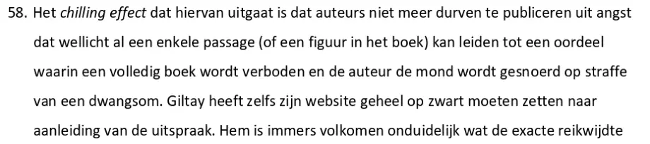

Bewijsstuk · Dagvaarding
Appeldagvaarding van Giltay tegen Barbara Overduyn, 8 januari 2016
De passage
“58. Het chilling effect dat hiervan uitgaat is dat auteurs niet meer durven te publiceren uit angst dat wellicht al een enkele passage (of een figuur in het boek) kan leiden tot een oordeel waarin een volledig boek wordt verboden en de auteur de mond wordt gesnoerd op straffe van een dwangsom. Giltay heeft zelfs zijn website geheel op zwart moeten zetten naar aanleiding van de uitspraak.” Randnummer 58, op pagina 19 van de dagvaarding, de derde pagina van dit uittreksel van vier pagina’s. In de gedrukte dagvaarding staan de Engelse termen ‘chilling effect’ en ‘pressing social need’, en de boektitel, cursief. De alinea loopt door over de paginagrens: de zin die volgt zegt dat de precieze reikwijdte van het verbod dat de voorzieningenrechter had opgelegd, voor Giltay volkomen onduidelijk was.

Waarom dit document telt
Voorzieningenrechter M.E. Groeneveld-Stubbe had De doofpotgeneraal in zijn geheel verboden, terwijl de zaak volgens deze appeldagvaarding alleen had mogen gaan over concrete, specifieke uitingen die de rechtbank te ver vond gaan. In deze appeldagvaarding noemen Giltays advocaten een algeheel verbod op een boek censuur, en zij zetten uiteen wat het afschrikkende effect is: auteurs durven niet meer te publiceren als één passage een heel boek kan doen vallen en de auteur dan op straffe van een dwangsom de mond wordt gesnoerd. De dagvaarding vermeldt ook dat Giltay zijn website noodgedwongen geheel op zwart had gezet, omdat de precieze reikwijdte van het verbod hem onduidelijk was. Op 12 april 2016 hief het Gerechtshof Den Haag het verbod op.
Herkomst
- Document
- Dagvaarding in hoger beroep, uittreksel
- Namens
- Edwin Franciscus Giltay, wonende te Den Haag, appellant
- Betekend aan
- Barbara Overduyn, wonende te Zoetermeer, geïntimeerde
- Instantie
- Gerechtshof Den Haag, Paleis van Justitie, Prins Clauslaan 60
- Zitting
- Dinsdag 19 januari 2016, 10:00 uur
- Datum
- Deze versie van de dagvaarding is ongedateerd: de datumregel is als sjabloon blijven staan en luidt alleen ‘Vandaag, … tweeduizendzestien’. Volgens het arrest van 12 april 2016 (r.o. 1.1) is de dagvaarding op 8 januari 2016 betekend. Deze pagina volgt die datum
- Bestreden uitspraak
- Voorzieningenrechter Rechtbank Den Haag, 14 december 2015
- Zaaknummer
- C/09/497903 KG ZA 15/1556 (eerste aanleg)
- Advocaten
- J.G.J. van Groenendaal, Boekx Advocaten, Amsterdam, voor appellant; R.F. Thunnissen, STV Mathieu Advocaten, Den Haag, voor geïntimeerde
- Verwijzingen
- Randnummers 56 tot en met 58, over vrijheid van meningsuiting, proportionaliteit en het chilling effect; het arrest van 12 april 2016 in dit hoger beroep
- Taal
- Nederlands
- Pagina’s
- Vier pagina’s van de dagvaarding: pagina’s 1 en 2, en 19 en 20. Delen van de tekst op pagina’s 2, 19 en 20 zijn zwartgelakt; op pagina 19 zijn alleen de randnummers 56, 57 en 58 zichtbaar gelaten
- Berust bij
- Archief van de auteur
- Zie ook
- Rechtbank Den Haag, vonnis van 14 december 2015 (ECLI:NL:RBDHA:2015:15050)
Aangehaald in: de stemmensectie.
Bewijsstukpagina: https://
Document: https://
Laatst gewijzigd 13 september 2026, geraadpleegd 3 oktober 2026.

Deze pagina is een bewijsstuk bij het boek De doofpotgeneraal van Edwin Giltay en de bijbehorende website.